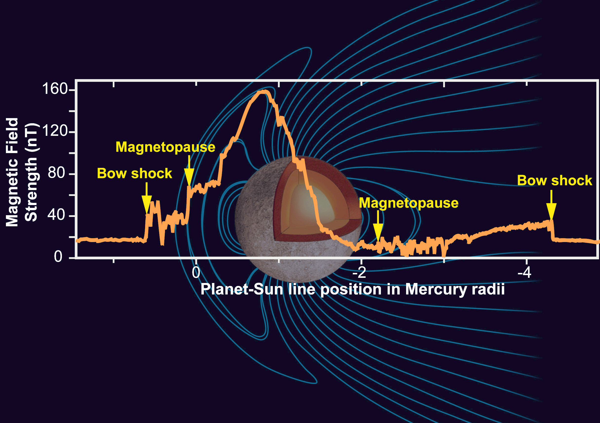

Welcome to the MERCURY!
 |
| Mercury Profile: |
| Diameter: 4,879 km |
| Mass: 3.29 × 10^23 kg (0.06 Earths) |
| Moons: None |
| Orbit Distance: 57,909,227 km (0.39 AU) |
| Orbit Period: 88 days |
| Surface Temperature: -173 to 427°C |
| |
| Mercury Profile: |
| Diameter: 4,879 km |
| Mass: 3.29 × 10^23 kg (0.06 Earths) |
| Moons: None |
| Orbit Distance: 57,909,227 km (0.39 AU) |
| Orbit Period: 88 days |
| Surface Temperature: -173 to 427°C |
Mercury is the smallest planet in the Solar System and the one closest to the Sun,[a] with an orbital period of about 88 Earth days, which is much faster than any other planet in the Solar System. Seen from Earth, it appears to move around its orbit in about 116 days. It has no known natural satellites. It is named after the Roman deity Mercury, the messenger to the gods.
Partly because it has almost no atmosphere to retain heat, Mercury's surface temperature varies diurnally more than any other planet in the Solar System, ranging from 100 K (-173 Celsius) at night to 700 K (427 Celsius) during the day in some equatorial regions. The poles are constantly below 180 K (-93 Celsius). Mercury's axis has the smallest tilt of any of the Solar System's planets (about 1/30 of a degree), and its orbital eccentricity is the largest of all known planets in the Solar System. At aphelion, Mercury is about 1.5 times as far from the Sun as it is at perihelion. Mercury's surface is heavily cratered and similar in appearance to the Moon, indicating that it has been geologically inactive for billions of years.
Mercury is one of four terrestrial planets in the Solar System, and is a rocky body like Earth. It is the smallest planet in the Solar System, with an equatorial radius of 2,439.7 kilometres (1,516.0 mi). Mercury is also smaller-albeit more massive-than the largest natural satellites in the Solar System, Ganymede and Titan. Mercury consists of approximately 70% metallic and 30% silicate material. Mercury's density is the second highest in the Solar System at 5.427 g/cm3, only slightly less than Earth's density of 5.515 g/cm3. If the effect of gravitational compression were to be factored out, the materials of which Mercury is made would be denser, with an uncompressed density of 5.3 g/cm3 versus Earth's 4.4 g/cm3.
Mercury's density can be used to infer details of its inner structure. Although Earth's high density results appreciably from gravitational compression, particularly at the core, Mercury is much smaller and its inner regions are not as compressed. Therefore, for it to have such a high density, its core must be large and rich in iron.
Mercury's surface is similar in appearance to that of the Moon, showing extensive mare-like plains and heavy cratering, indicating that it has been geologically
inactive for billions of years. Because knowledge of Mercury's geology has been based only on the 1975 Mariner 10 flyby and terrestrial observations, it is the least
understood of the terrestrial planets. As data from MESSENGER orbiter are processed, this knowledge will increase. For example, an unusual crater with radiating
troughs has been discovered that scientists called "the spider". It was later named Apollodorus.
Albedo features are areas of markedly different reflectivity, as seen by telescopic observation. Mercury has dorsa (also called "wrinkle-ridges"), Moon-like highlands,
montes (mountains), planitiae (plains), rupes (escarpments), and valles (valleys).
Despite its small size and slow 59-day-long rotation, Mercury has a significant, and apparently global, magnetic field. According to measurements taken by Mariner 10,
it is about 1.1% the strength of Earth's. The magnetic-field strength at Mercury's equator is about 300 nT. Like that of Earth, Mercury's magnetic field is dipolar.
Unlike Earth, Mercury's poles are nearly aligned with the planet's spin axis. Measurements from both the Mariner 10 and MESSENGER space probes have indicated
that the strength and shape of the magnetic field are stable.
It is likely that this magnetic field is generated by a dynamo effect, in a manner similar to the magnetic field of Earth. This dynamo effect would result from
the circulation of the planet's iron-rich liquid core. Particularly strong tidal effects caused by the planet's high orbital eccentricity would serve to keep the
core in the liquid state necessary for this dynamo effect.
Graph showing relative strength of Mercury's magnetic field

Mercury has the most eccentric orbit of all the planets; its eccentricity is 0.21 with its distance from the Sun ranging from 46,000,000 to 70,000,000 km
(29,000,000 to 43,000,000 mi). It takes 87.969 Earth days to complete an orbit. The diagram on the right illustrates the effects of the eccentricity,
showing Mercury's orbit overlaid with a circular orbit having the same semi-major axis.
Mercury's higher velocity when it is near perihelion is clear from the
greater distance it covers in each 5-day interval. In the diagram the varying distance of Mercury to the Sun is represented by the size of the planet,
which is inversely proportional to Mercury's distance from the Sun. This varying distance to the Sun, combined with a 3:2 spin-orbit resonance of the planet's
rotation around its axis, result in complex variations of the surface temperature. This resonance makes a single solar day on Mercury last exactly two Mercury years,
or about 176 Earth days